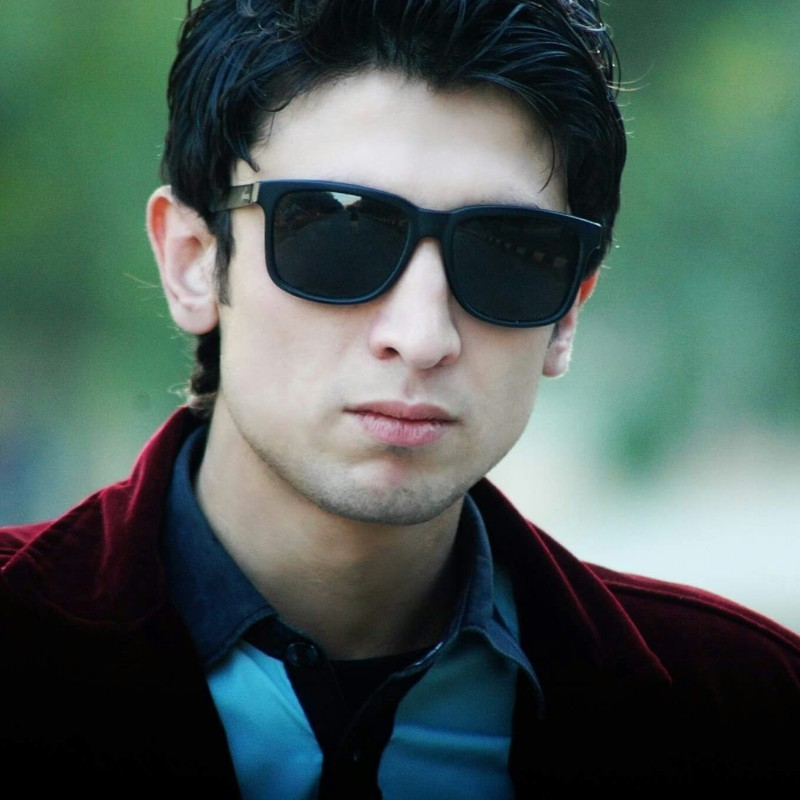

Mehmood Khan

Summary
Experienced full-stack web developer proficient in designing and
implementing dynamic, user-friendly web applications.
Education
-
Bachelor of Software Engineering - University Of Swat, Pakistan
(2016-2019)
Work Experience
-
Project Manager / Lead Developer
2020 - 2023
-
Project Officer and Lead Developer responsible for coordinating
projects, managing timelines, and overseeing a team of developers.
-
Collaborate with stakeholders to gather requirements and deliver
innovative solutions aligned with project objectives..
Full Stack developer
2020 - 2021
- Full-stack web developer skilled in designing and implementing dynamic web applications.
- Proficient in both front-end and back-end development, with expertise in multiple programming languages and frameworks.
- Collaborate with cross-functional teams to deliver robust and user-friendly solutions.
Wordpress developer
2019 - 2022
-
WordPress developer proficient in creating customized and responsive websites.
- Extensive experience in theme and plugin development, ensuring seamless functionality and user-friendly interfaces
- Committed to delivering high-quality solutions that meet client objectives.
Language
- English: ⭐️⭐️⭐️⭐️⭐️
- Urud: ⭐️⭐️⭐️⭐️⭐️
- Pashto: ⭐️⭐️⭐️⭐️⭐️
- French: ⭐️⭐️⭐️⭐️⭐️
Award & Certificate
- WordPress (DigiSkills)
- SEO (DigiSkills)
- Graphic (DigiSkills)
- WordPress (Udemy)
- Full Stack Development (Udemy)
Award & Certificate
©Mehmood Khan | All rghts reserved 2023